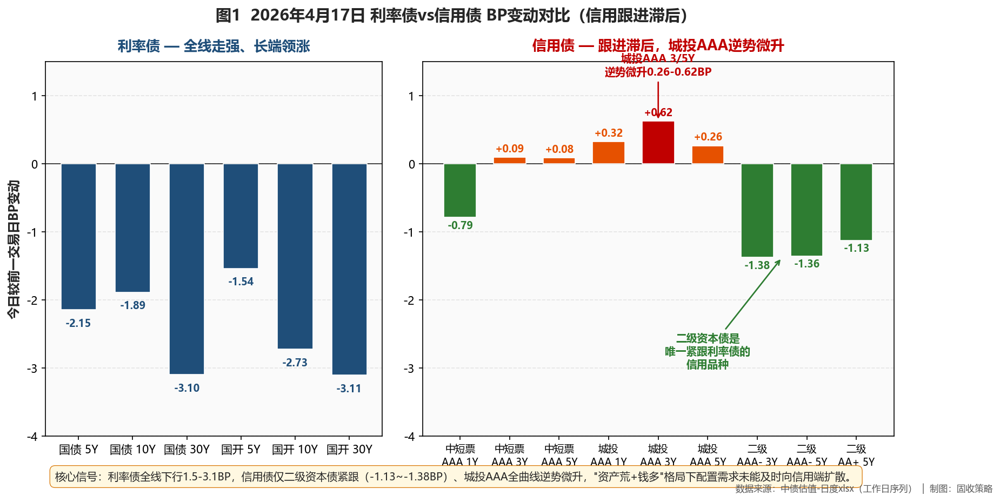
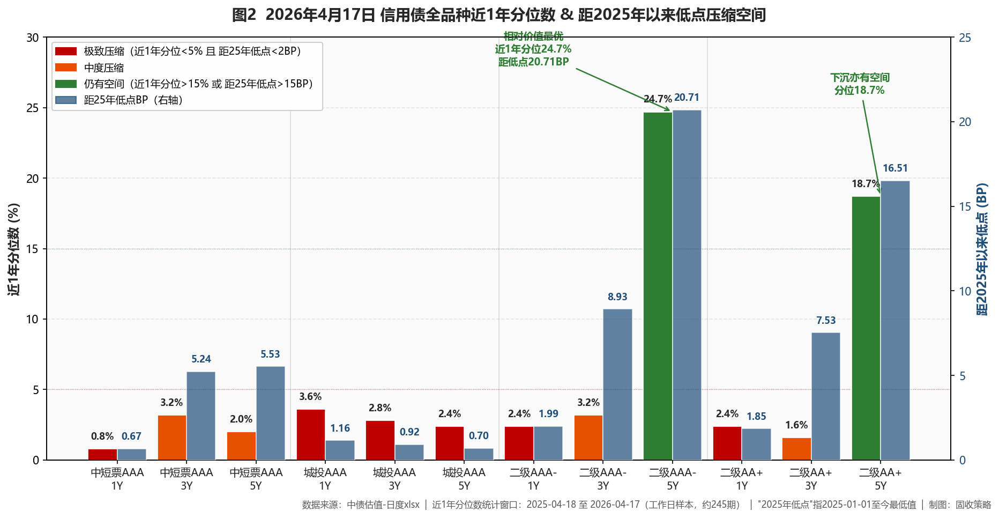

市场定性 资产荒延续 + 牛平加速——利率债全线下行1.5-3.1BP、30Y国债-3.10BP领跌，但信用债跟进明显滞后，信用利差被动走阔、仅二级资本债紧跟利率，城投AAA逆势微升。
- ✅ 超配5Y 二级资本债 AAA-（近1年分位24.7%、距25年低点20.71BP，信用债中唯一结构α），目标权重≥30%；叠加5Y二级AA+下沉（分位18.7%、距低点16.51BP）
- ✅ 战术利用信用利差走阔机会——3-5Y中短票AAA利差单日+1.56/+2.23BP、城投AAA +2.09/+2.41BP，短期修复窗口可波段参与（仓位≤10%快进快出）
- ❌ 规避中短票AAA 1Y（分位0.8%、距低点0.67BP）、中短票AA+ 3Y（分位0.4%、距低点0.68BP）——极致贴底、不新增
资金面
央行净回笼15亿 + 国库现金定存5M/6M净投放2000亿@1.70/1.69%（较上期-2/-4BP）；DR001 1.22%低位、DR007连续两周低于OMO（两年多少见）；1Y AAA存单-1.00BP至1.47%。税期将至压力暂未显。
利率债
全线下行、长端领涨：30Y国债-3.10BP、10Y国开-2.73BP、10Y国债-1.89BP；活跃券与中债估值同步下行（不同于4/20的分化格局），配置盘+交易盘一致买入。10Y隐含税率7.85BP。30Y国债近1年分位已从19%反弹至68%，长端博弈空间开始收窄、可逢强兑现。

图1 利率债vs信用债 BP变动对比 —— 信用跟进滞后
信用债（核心）
跟进滞后：二级资本债AAA-/AA+全曲线-1.13~-1.38BP紧跟利率；中短票AAA 3-5Y基本持平（利差+1.56/+2.23BP）；城投AAA全曲线逆势微升0.26-0.62BP、利差走阔+0.32~+2.41BP（全市场唯一上行板块）。相对价值上，二级AAA- 5Y分位24.7%/距低点20.71BP、二级AA+ 5Y分位18.7%/距低点16.51BP，是最具吸引力的结构α；中短票AAA 1Y/AA+ 3Y分位<1%，极致贴底。利差被动走阔为3-5Y中短票/城投AAA提供短期战术修复机会（需快进快出、不作长期仓位）。

图2 信用债全品种近1年分位数 & 距2025年以来低点压缩空间
策略矩阵
一、公开市场与资金面
央行4月17日开展5亿元7天逆回购、20亿元到期，净回笼15亿元，操作利率1.40%。财政部+央行当日开展两期国库现金定存招标——5M中标1200亿元@1.70%（较上期-2BP）、6M中标800亿元@1.69%（较上期-4BP），进一步支撑流动性。银行间资金面仍然宽松，DR001加权平均小幅上行并停留于1.22%低位；X-repo隔夜1.2%供给逾千亿、非银质押存单/信用债融入隔夜报价1.35%-1.4%区间。DR007已连续两周低于公开市场逆回购利率，为两年多以来少见，反映资金面持续超预期宽松。
存单方面，1Y AAA同业存单-1.00BP至1.4700%、3M -0.50BP至1.3900%、6M -0.50BP至1.4350%。税期将至但压力暂未显，资金面扰动预计有限。CNEX全市场情绪指数16:00收于48（大行46/中小行49/非银48），各机构间分化不明显、处均衡偏松状态。
二、利率债与债市总览
今日利率债全线大幅走强、长端领涨，活跃券端30年期国债"26附息国债02"下行2.60BP至2.2520%、10年期国开"25国开20"下行2.20BP至1.8655%、10年期国债"26附息国债05"下行1.70BP至1.7570%；中债估值口径下全曲线进一步强化这一判断——国债30Y/10Y/5Y分别下行3.10/1.89/2.15BP、国开30Y/10Y/5Y分别下行3.11/2.73/1.54BP，中债估值的下行幅度甚至略超活跃券，说明配置盘与交易盘今日同步积极买入，而非像4月20日那样出现分化。
国债期货全线上涨，TL2606（30Y）大涨0.67%至113.390、T2606（10Y）+0.15%、TF2606（5Y）+0.06%、TS2606（2Y）+0.03%，长端期货领涨与现券完全吻合，"钱多资产少"格局驱动配置需求向长端扩散。曲线形态层面，中债估值口径下10Y-1Y国债期限利差60.10BP、30Y-10Y 48.77BP，曲线呈现典型牛平特征，10Y国开-国债隐含税率仅7.85BP——相对国债凸性溢价已薄，但若后续资金面继续超预期、长端仍有下探空间。
图1 利率债vs信用债 BP变动对比 —— 信用跟进滞后
三、信用债市场
今日信用债最突出的特征是跟进节奏显著滞后于利率债——利率债全线下行1.5-3.1BP的同时，信用债呈现三档差异：二级资本债（AAA-/AA+）是唯一紧跟利率的信用品种，1Y/3Y/5Y AAA- 分别下行1.38/1.38/1.36BP、AA+ 分别下行1.39/1.26/1.13BP；中短票AAA 1Y下行0.79BP（分位0.8%），但3Y/5Y仅+0.09/+0.08BP基本持平，信用利差1Y/3Y/5Y分别-0.79/+1.56/+2.23BP——中短端跟随、中长端明显跟不上；城投AAA全曲线逆势微升0.26-0.62BP，信用利差单日走阔+0.32/+2.09/+2.41BP——是全市场唯一上行的高等级品种。
相对价值扫描上，银行二级资本债仍是最具吸引力的结构α——AAA- 5Y近1年分位24.7%、距2025年以来低点20.71BP；AA+ 5Y近1年分位18.7%、距低点16.51BP——两者均提供10BP以上的压缩空间，且随今日下行1.1-1.4BP已开启趋势，是结构性资产荒下品种α的典型窗口。与之相比，中短票AAA/AA+ 1Y与城投AAA全曲线的近1年分位数均<4%、距低点<1.2BP，已极致压缩、进一步下行空间几乎为零。
今日信用利差的被动走阔，实际上为3-5Y中短票AAA与城投AAA提供了短期战术性参与的入场机会——信用策略复盘中，"利率下行信用跟不上"阶段往往紧接着信用利差修复窗口，修复时间通常在3-5个交易日内。但需注意，由于这两个品种的绝对分位数已极低（<4%），战术机会仅适合快进快出的波段交易，不可作为长期配置仓位。机构行为层面，"当前流动性充盈，配置需求接力入场；资金太松、钱多资产少，配置需求会向长端扩散"——这与"保险+理财双重资产荒下长端配置需求释放"判断一致。但长端利率债今日下行幅度较大、30Y国债近1年分位已从19%反弹至68.1%，后续长端博弈空间开始收窄，若分位数进一步上升至80%以上建议减仓。
图2 信用债全品种近1年分位数 & 距2025年以来低点压缩空间